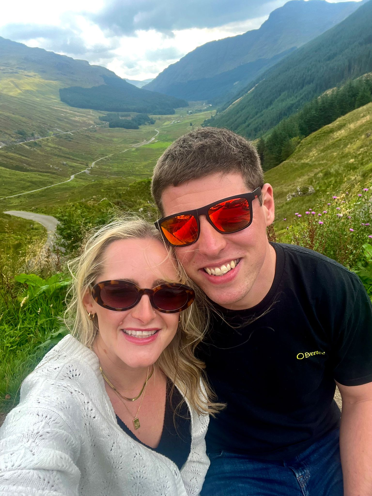
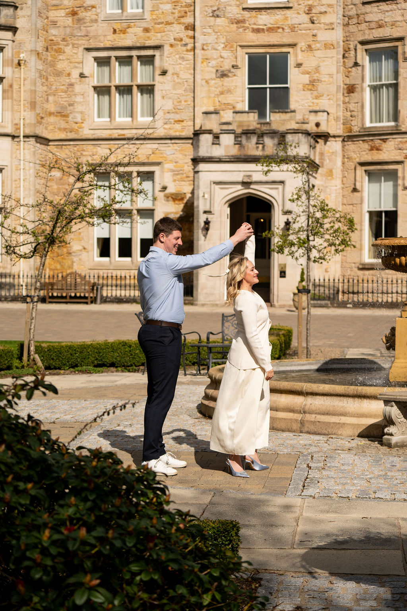
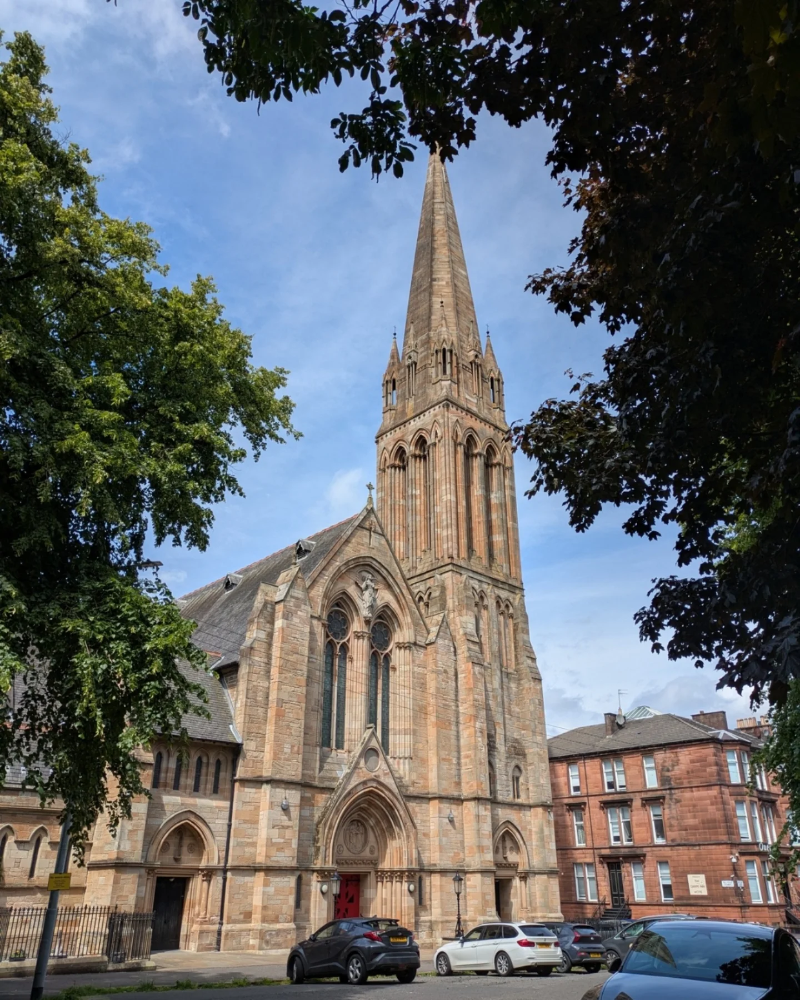
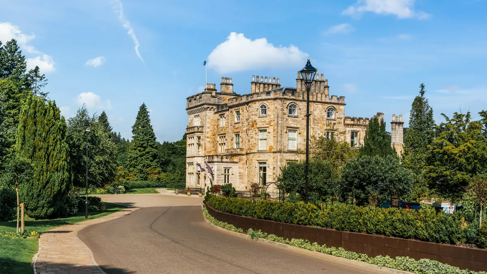

Please enter the password shown on your invitation.
Our story began long before either of us realised. As young children, we met at church, never imagining that years later our paths would cross again in the most unexpected way.
Fast forward to adulthood, when Peter decided to take a chance and slid into Sophie’s DMs. What started as a simple message quickly turned into something special. We went on our first date the day before Peter flew to Italy for two weeks on holiday. Most people would have expected the timing to fizzle out the spark, but if anything, it only made us realise how excited we were to see each other again.
From that moment on, we’ve been inseparable, making memories, sharing adventures, and building a life together.
One of our favourite places has always been Lochgoilhead, where we enjoyed our first day trip together. It became even more special when Peter got down on one knee and asked Sophie to marry him in the very same place.
Now, we’re so excited to celebrate the next chapter of our story with all of the people we love most. Thank you for being part of our journey — we can’t wait to celebrate with you!

Arrive at Wedding Ceremony
Bride Arrival
Drinks Reception/Photos
Speeches
Wedding Breakfast
Evening Reception
Evening Buffet
Carriages

Queen's Park Baptist Church, 20 Balvicar Drive, G42 8QS
Queen's Park Baptist Church is located on Glasgow's south side, right next to Queen's Park.
Crossbasket Castle, Stoneymeadow Road, G72 9UE
Crossbasket Castle is approximately 25 minutes from Glasgow city centre, and approximately 20 minutes from Queen's Park Baptist Church.


We're so excited to celebrate our wedding with the people we love.
If you were thinking of giving us a gift, we've decided not to have a traditional registry. Instead, we're saving towards our honeymoon and our first home, and any contribution towards those dreams would mean so much to us.
Every gift, no matter the size, will help us create wonderful memories and build our life together.
Please RSVP by 17/08/2026
If you have any issues with this form please contact us at sophieandpeter2026@gmail.com
We’ve answered some of the questions you may have about our wedding day. If there’s anything else you’d like to know, please get in touch with us at sophieandpeter2026@gmail.com.
We recommend arriving at Queen’s Park Baptist Church around 30 minutes before the ceremony to allow plenty of time to find a seat.
There is on-street parking available near the church, and we recommend allowing extra time to find a space. Parking is available at Crossbasket Castle for the reception.
Guests should make their own way from Queen’s Park Baptist Church to Crossbasket Castle. Further travel information can be found in the venue section of the website.
There are a limited number of rooms available on-site at Crossbasket Castle Hotel. If you would like to book a room, please use code WEDGST to get a discounted rate on a standard room. Rooms can be booked by visiting https://www.crossbasketcastle.com/.
Unless a child is named on your invitation, our wedding will be an adults-only celebration.
Please include any allergies or dietary requirements when completing your RSVP, and we’ll pass the information on to the venue.
We’d kindly ask that phones and cameras are put away during the ceremony. You’re very welcome to take photographs during the reception and evening celebration.
Evening guests should arrive at Crossbasket Castle from 7:30pm.
The evening reception is expected to finish at midnight. Please arrange taxis or transport in advance where possible.
Rather than a traditional registry, we’re saving towards our honeymoon and our first home. You can find more information in the wedding registry section of the website.
View our wedding registryPlease let us know as soon as possible if your plans change and you’re no longer able to attend.